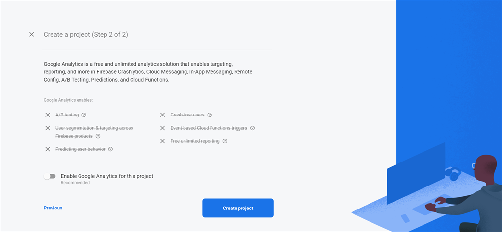
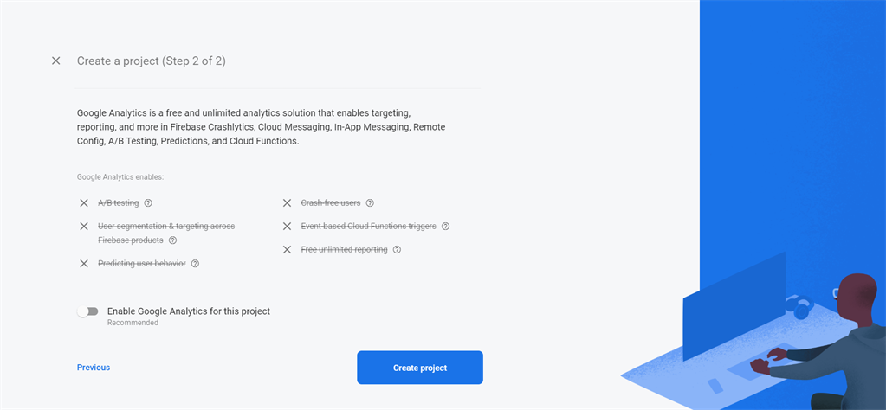

Firebase Setup
If you already created firebase project at that time then you can skip below firebase steps
Configure the firebase setup
- Create a firebase project at https://console.firebase.google.com/

- Register a new account or try to log in with existing google accout.

- Once logged in, you can see firebase console dashboard. Click on Add Project. Provide a project name, and then select country and then after that click on Create Project. For example, see the below image
 

- Once the project has been created, it will automatically redirect to Firebase dashboard screen.

- Go to Authentication and open Sign-in method tab and enable providers which is highlight below

- Now at the bottom of the page, in Authorized domains, localhost and a Firebase domain are automatically added. Here we've to add domain name without http:// or https://. You can add http:// and https:// whever eDemand Front End(Web Version) Website will get hosted. If you're using www as prefix of domain name then you must have to add that.
- Now add your domain with www. as prefix like www.myeDemand.com

- Go to Project settings in firebase dashboard option.

- Go to Project settings and scroll down you will find created web App there you find config option that will have firebase settings for front end.
- Add the below config to your Firebase Console > Project settings > General

- You need to set this details in eDemand Admin panel -> Web Settings page from this Project settings page in firebase dashboard option
- Also update firebase config value in web .env file and public/firebase-messaging-sw.js file